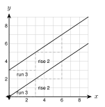
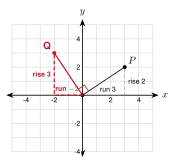
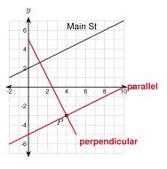

1. Find the slope of the line through (1, 2) and (5, −6).
−6 − 25 − 1 = −2
2. Solve 2x + 3y = 6 for y.
3y = −2x + 6, so y = −23x + 2
3. Solve 3 = −2(4) + b.
3 = −8 + b, so b = 11
a. m = −1 − 54 − (−2) = −66 = −1.
b. The slope is the number in front of x: −34.
c. y = 3 is horizontal. The slope is 0.
d. x = 4 is vertical. The slope is undefined. (The run is 0, and you cannot divide by 0.)
m = 0 − (−4)3 − (−3) = 46 = 23

Slope of AB: 6 − 24 − 1 = 43.
Slope of CD: 3 − (−1)1 − (−2) = 43.
The slopes are equal. Is it the same line? The line through A and B at x = −2 has y = −2, not −1. So C is not on it.
Because the slopes are equal and the lines are different, the lines are parallel.
Yes. Both have slope 3 and the y-intercepts −2 and 5 are different, so the lines are different.

Slope 34: flip to 43 and change the sign: −43. Check: 34 · (−43) = −1.
Slope −5 = −51: flip to 1−5 and change the sign: 15. Check: −5 · 15 = −1.
−27
a. y = 2x + 1 and 4x − 2y = 6. Rewrite the second: −2y = −4x + 6, so y = 2x − 3. Slopes: 2 and 2. The y-intercepts differ, so the lines are parallel.
b. 2x + 3y = 6 and 3x − 2y = 4. First: y = −23x + 2, slope −23. Second: y = 32x − 2, slope 32. Product: −23 · 32 = −1. The lines are perpendicular.
c. The line through (0, 0) and (4, 2), and the line through (1, 5) and (3, 1). Slopes: 24 = 12 and 1 − 53 − 1 = −2. Product: −1. The lines are perpendicular.
a. y = 3x and y = −3x
Slopes 3 and −3. Neither. (The product is −9.)
b. y = −12x + 1 and y = 2x + 4
Slopes −12 and 2. Perpendicular.
The slope is 2 (same slope). Put in the point: −1 = 2(3) + b, so b = −7.
The equation is y = 2x − 7.

Parallel: m = 12. −3 = 12(4) + b, so b = −5. The road is y = 12x − 5.
Perpendicular: m = −2. −3 = −2(4) + b, so b = 5. The road is y = −2x + 5.
m = −12. 1 = −12(4) + b, so b = 3. y = −12x + 3.
1. Slope is the change in y over the change in x, or rise over run.
2. Parallel lines have the same slope.
3. Perpendicular lines have slopes that are opposite reciprocals. Their product is −1.
1. (2, −3) and (6, 5)
2
2. (−4, 1) and (2, −2)
−12
3. (0, 5) and (0, −1)
undefined
4. (−3, 4) and (5, 4)
0
5. y = −3x + 4
−3
6. 5x + 2y = 10
y = −52x + 5, slope −52
7. 35
Parallel 35. Perpendicular −53.
8. −4
Parallel −4. Perpendicular 14.
9. 0
Parallel 0. Perpendicular: undefined (vertical).
10. y = 3x − 2 and y = 3x + 5
Both slopes 3. Parallel.
11. y = −12x + 1 and y = 2x + 4
−12 · 2 = −1. Perpendicular.
12. 3x + 4y = 8 and 4x − 3y = 6
−34 and 43. Product −1. Perpendicular.
13. 2x − y = 5 and 4x − 2y = 3
Both slopes 2 (y = 2x − 5 and y = 2x − 1.5). Parallel.
14. y = 5x and y = −5x
Slopes 5 and −5. Neither.
15. The line through (1, 1) and (4, 7), and the line through (0, −3) and (2, 1)
Both slopes 2. The lines are different, so parallel.
16. The line through (−2, 0) and (2, 3), and the line through (0, 4) and (3, 0)
34 and −43. Perpendicular.
17. Through (2, 5), parallel to y = −3x + 1
y = −3x + 11
18. Through (−1, 4), perpendicular to y = 14x − 2
m = −4. b = 0. y = −4x.
19. Through (6, −2), parallel to 2x + 3y = 12
m = −23. y = −23x + 2.
20. Through (5, 3), perpendicular to 5x − 2y = 10
m = 52, so the new slope is −25. y = −25x + 5.
21. Kofi says a line perpendicular to a line with slope 23 has slope 32. What is wrong? What is the correct slope?
He flipped the fraction but did not change the sign. The product is 1, not −1. The correct slope is −32.
22. Line m has the equation y = 25x + 3. Which equation represents the line that is perpendicular to line m and passes through the point (0, −1)?
A. y = 25x − 1
B. y = −52x − 1 ← correct
C. y = −25x − 1
D. y = 52x − 1
23. Which pair of equations represents parallel lines?
A. y = 2x + 1 and y = −2x + 1
B. 3x − y = 4 and y = 3x + 7 ← correct
C. y = 12x and y = −2x
D. x + y = 5 and x − y = 5
24. The line through (1, 2) and (3, k) is parallel to y = 2x. Find k. Then find k if the line is perpendicular to y = 2x.
Parallel: k − 22 = 2, so k = 6. Perpendicular: k − 22 = −12, so k = 1.